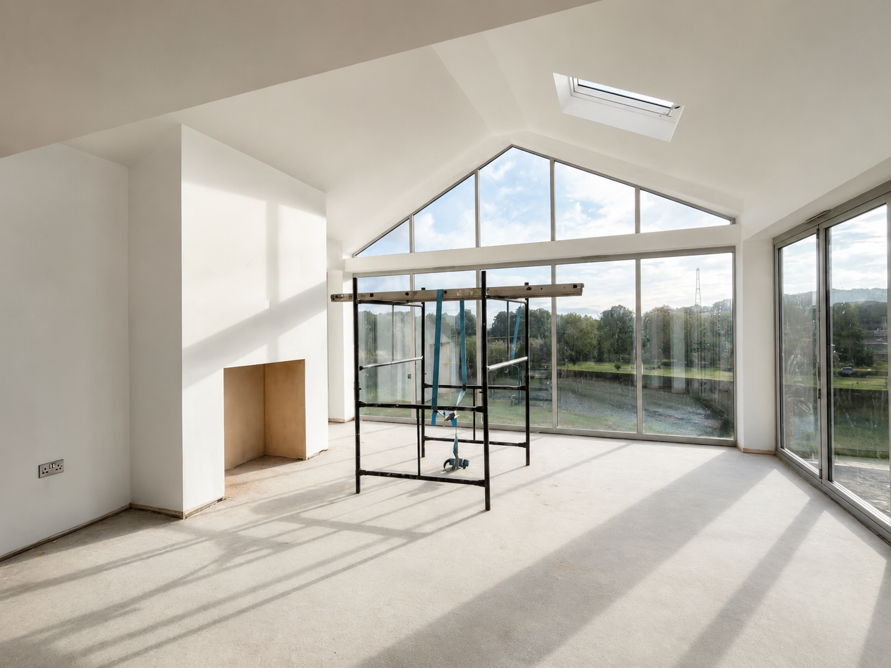

Extensions
More usable space without losing control of the existing home.
Kitchen, dining, rear, side and two-storey extensions need careful planning: access, structure, drainage, light, building control and the join between old and new.
Structural openings
Brickwork and shell
Roofing and glazing
First and second fix
Internal finish
Final snagging
Journey fit
Extension enquiries start with photos of the area, access, levels and existing walls before consultation.
See the 7-step route
Start an Extension Enquiry